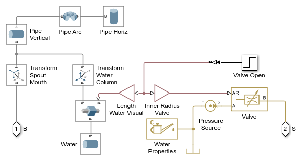
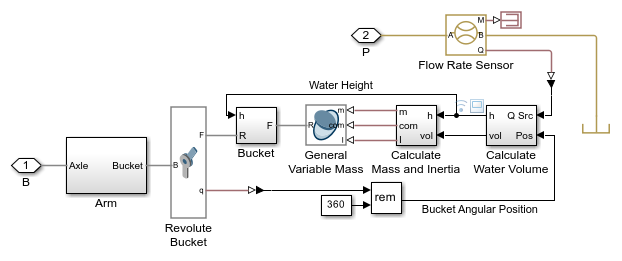
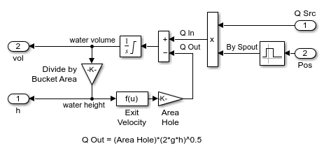
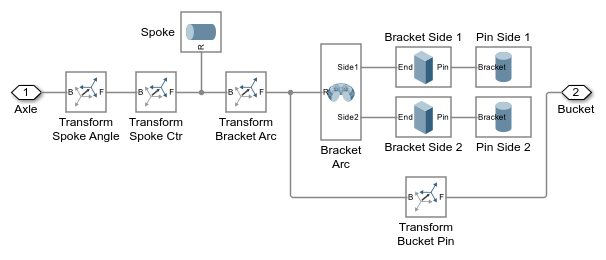
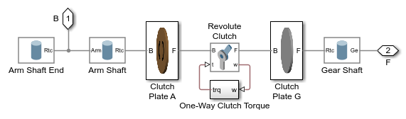
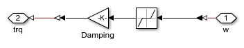
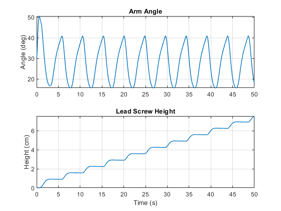

Water Powered Lift
This example models a water powered mechanical lift. Water flowing from a spout fills a bucket that is on the end of an arm. When the bucket is full, its weight causes it to drop, moving it away from the spout. A hole in the bottom of the bucket allows the water to drain. As the water drains, the bucket becomes lighter and a spring rotates the arm so that the bucket is back under the spout.
The bucket is connected via a one-way clutch and a bevel gear to a lead screw. The lead screw is non-backdriveable. This combination of mechanical elements enables the pouring water to lift a mechanical load.
This example uses a the General Variable Mass block from Simscape Multibody to model the varying mass, inertia, and center of gravity location in each bucket.
Contents
Model
Spout Subsystem
This subsystem models the spout and provides a visual cue that the water is flowing. A pressure source models the hydraulic head. A Simulink signal controls the opening of a valve and the movement of the visual cue in the Simscape Multibody animation.
Arm and Bucket with General Variable Mass
The General Variable Mass block is used to model the varying mass, inertia, and location of the center of gravity within each bucket. These quantities vary as the buckets are filled from the source and drain through the hole in their base. The angle of the bucket is used to determine if the buckets are underneath the spout.
Calculate Water Volume Subsystem
This subsystem calculates the volume of water in the bucket. The Interval Test block is used to determine if the bucket is under the spout. If so, it is assumed the bucket gets all the water coming from the spout.
The rate of water leaving the bucket depends on the height of the water in the bucket and the size of the hole in the bucket. They are related by the following equation:

Integrating the net flow rate into the bucket allows us to calculate the volume of water in the bucket. The Integrator is limited to ensure that the volume of the water does not go below zero and does not exceed the size of the bucket.
Because the area of the bucket does not vary with its height, we can simply divide by the area of the bucket to get the height of the water in the bucket. More complex formulas or a lookup table could be used if the bucket had a more complex shape.
Calculate Mass and Inertia Subsystem
This subsystem prepares the inputs for the General Variable Mass block. It is important to know the location and orientation of the frame to which this block is attached, for it governs these calculations. The frame is attached at the center of floor of the bucket with the z-axis pointing up.
The mass is simply the volume times the density. Since the bucket is symmetrical, the only non-zero component for the center of gravity is the z-axis which is half of the height of the water. The inertia tensor is calculated for a square beam:


Mechancial Arm Subsystem
This subsystem models one of the arms on the water wheel. It consists of six rigid parts - the spoke, bracket arc, bracket sides, and the pins that attach to the bucket. Though it is modeled using six separate Solid blocks and a number of Rigid Transform blocks, it is treated as a single solid part by Simscape Multibody. A few of the solids, such as Bracket Arc, have multiple ports. Solids with multiple ports have frame definitions within the Solid block itself.
One-Way Clutch Subsystem
This subsystem models one-way clutch connecting the arm to the gear. A Revolute Joint provides a degree of freedom, and a torque is applied to the joint so that the relative velocity can only be negative. This is a very simple model of a one-way clutch. Increasing the gain between rotational speed and torque will permit less slip between the shafts but will also make the model more numerically stiff.
One-Way Clutch Torque
Bevel Gear Subsystem
This subsystem models the bevel gear that connects the output shaft of the one-way clutch to the lead screw. Two Revolute Joints and Bevel Gear Constraint are required to constrain the two gears in this assembly. The Bevel Gear Constraint and Rigid Transform are parameterized so that the frames are positioned and oriented as required by the Bevel Gear Constraint block.
Lead Screw Subsystem
This subsystem models the lead screw. It uses the Lead Screw Joint in Simscape Multibody and has an additional subsystem that models stick-slip friction within the Lead Screw Joint. The default values of the friction model make the lead screw non-backdriveable, as the tangent of the lead angle is less than the coefficient of friction. The one-way clutch ensures that the drive gear spins only in one direction, and the non-backdriveable lead screw ensures that the load will not lower due to its own weight. This combination makes it possible for the arm to raise the load.
Simulation Results from Simscape Logging
The plot below shows the angle of the arm and the height of the lead screw. A one-way clutch causes the lead screw to only advance as the bucket moves downward.
